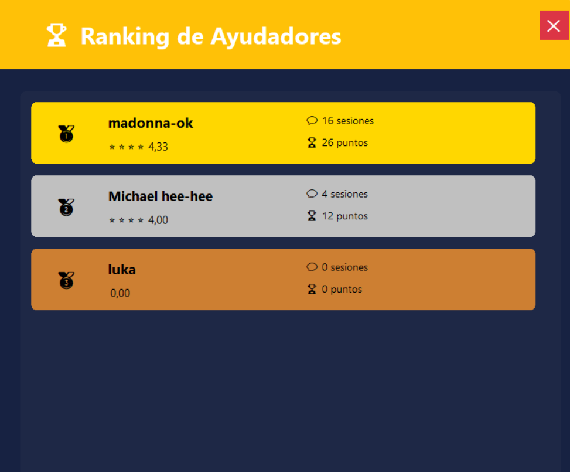

Playing the guitar
Practice taught me something no tutorial did: progress is unglamorous and repetitive, and then one day your hands just know. Muscle memory is the original version control.
currently: learning, breaking, fixing
logic & noise, same brain
I’m learning and building my way into tech — treating every challenge as data, not a verdict. Guitar in one hand, strategy in the other, and empathy at the center of whatever I make.
01 — about
Hi! I’m Thiago, also known as LopGo, an aspiring developer currently learning and building my way into the tech world. While I have some background in SQL, HTML, CSS, JavaScript, and Object-Oriented Programming, I don't just see myself as someone who writes code — I'm a creative problem solver.
I truly believe in empathy, helping others, and approaching challenges with a collaborative mindset. When I'm not coding (or occasionally trying my hand at drawing), you'll usually find me playing the guitar, studying chess, or diving into video games.
Learning to program isn't always easy for me, but I'm committed to giving my best, pushing through the struggles, and keeping my ultimate dream alive: making my own video game one day.
error → learning curve is steep
note → keep empathy and curiosity at the center
retry → give my best, one step at a time
goal → build my own game eventually02 — the three obsessions
Practice taught me something no tutorial did: progress is unglamorous and repetitive, and then one day your hands just know. Muscle memory is the original version control.
Chess is where I learned to think in consequences. Every move costs something. It rewired how I read code: not “does this work?” but what does this make impossible later?
I can’t just play — I take the design apart. Why that tutorial teaches without a single word. Why that jump feels right. Games are empathy engineered at sixty frames a second.
03 — project showcase
Now, I’m pursuing a degree in Software Development / Programming at university. I’m strengthening my foundations in computer science, software design, and algorithms while building a strong academic background.
I coded and designed a mental health social network in C# for my technical high school final project. It features a relational database, role management (users, admins, and helpers), near real-time chat functionality, a helper ranking system, reporting mechanisms, and an administrative management dashboard.




I will build my own video game that seamlessly transitions between 2D and 3D engine perspectives, blending distinct visual styles and evolving gameplay mechanics as the player progresses.
03 — now & next
Sharpening my skills across foundational technologies. Working through fundamentals, embracing the learning curve, making mistakes as part of the process, and focusing on writing clean, helpful solutions with empathy.
Taking on smaller, purposeful projects to gain confidence. Moving step by step, turning ideas into functioning lines of code, and learning how to solve problems creatively.
The whole reason I started. One day, a game that’s mine end to end — the systems, the soundtrack I’ll probably record on my own guitar, and a difficulty curve designed by someone who actually thought about the person holding the controller.
04 — tech comparison
In this video, I compare C# (which I used for my past C# social network project) and JavaScript. First, C# is more structured than JavaScript for backend logic and database systems. Then, JavaScript is simpler and more flexible than C# for rapid web UI development. Overall, C# is stronger and more reliable than JavaScript for heavy architectures, but JavaScript is faster to prototype than C#.